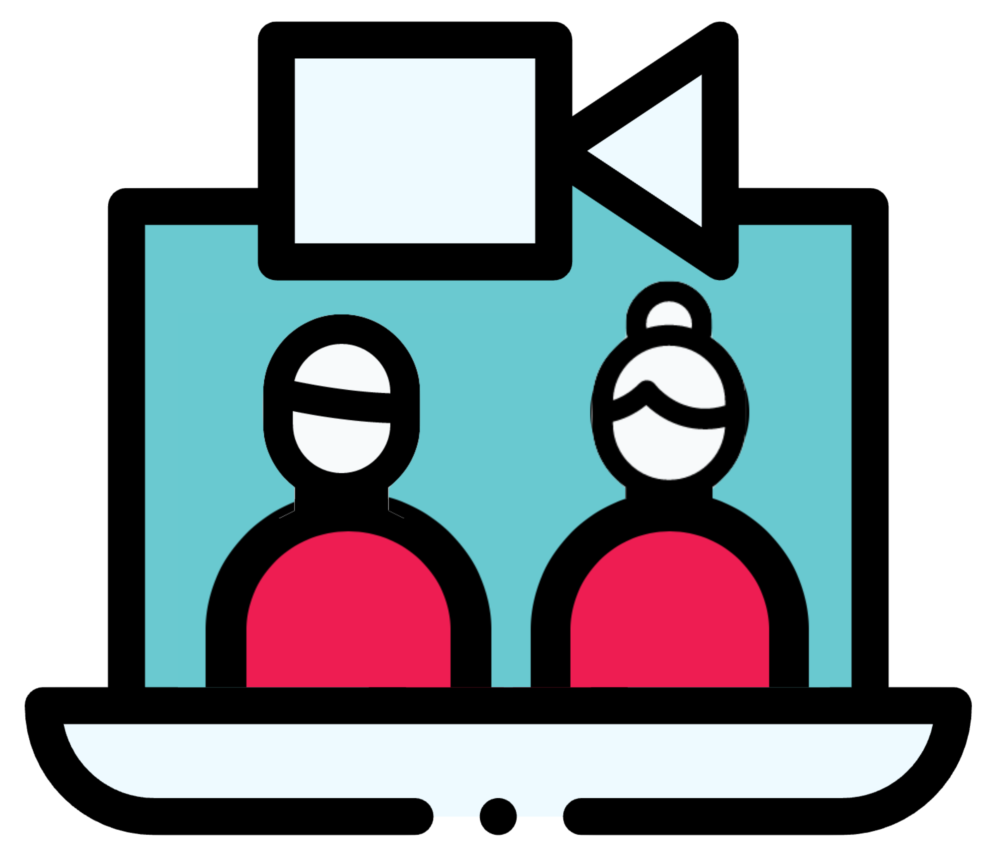

The Debut Sessions
For UK Startups Raising Their 1st Round
If you’re a UK based startup formed in the last 12 months and raising your first round of funding, pitch to a group of active investors, from the comfort of your study or sofa.
The Criteria
- The company has been formed within the past 18 months and has a UK registered office
- Raising up to a maximum of £750,000
- Raised less than £100,000 to date
- Focused on building the next generation of platforms and products improving work, life and health
- Product Demo (optional)
The Format
- The Sessions will run once a month, where (up to) 4 companies will be selected to pitch to the group of investors via Zoom
- The selections will be made and the companies notified 7 days in advance of the Session
- Investors will follow up with founders they want to progress within 48 hours of the session end
- Ascension Ventures has committed to backing at least two companies that make it through the Sessions over the next 6 months
The Open-Source Initiative
- Applicants can select whether they want their application to be kept confidential, or to be available for the wider ecosystem to access
- For applicants that opt-in, an Airtable document will be published on Twitter and Linkedin, updated on a weekly basis and be accessible to anyone
- Inclusivity is not something always prevalent across the investor ecosystem, so we are enabling every fund, VC or angel investor to gain access to the applications to give more exposure for the companies
How to Apply
-
1Record a product demo using Loom (up to 3 min) with an audio explainerand / or
-
2Record an elevator pitch (up to 3 min) explaining the background of the team, what you're building and what your big vision for the business is
-
3Complete a short Typeform
FAQ
Finding investors when raising that first round of funding is
challenging for founders that don’t have a pre-existing
network of contacts to make a warm introduction. And finding
active investors that are willing to back pre-revenue / very
early-stage companies in the UK can be even harder. This is
why we’ve created the Debut Sessions, to bring together some
of the most recognised investors in the UK who can provide
advice, support and ultimately that first cheque for
founders.
We believe the Debut Sessions can help break down the barriers
to access and give every founder / founding team seeking that
first cheque, an opportunity to showcase their new startup to
the Debut Sessions investors and the wider community via its
open-source initiative. The Debut Sessions investors are
friends, share similar values and opinions, and can add unique
insights to founders at the beginning of their journey. And of
course, we’re constantly looking for the outlier startups, and
think this initiative is a differentiated way of doing it!
Applicants can decide to keep their applications confidential or make the data and video available for the wider UK investment ecosystem to access. If choosing the latter option, the Debut Sessions will be creating an open-source Airtable document that anyone can access, which includes everyone outside of the Debut Sessions investor group. It will be published across Twitter, Linkedin and the Debut Sessions site.
All participating investors have been actively investing at
the pre-Seed stage in the UK for a number of years now. This
is where the majority of our expertise lie and where we can be
of most value to founders who have just formed new companies,
hence the laser focus on companies formed in the last 12
months in the UK.
We also believe there are a new breed of startups being formed
right now that will be tackling key themes around improving
work, life and health, with distributed teams, new business
models and differentiated go-to-market strategies. We’re here
to support this new wave and provide that first cheque.
The Sessions will run once a month until November 2020 (and may be extended). Up to 4 companies will be selected for each Session, which will run on the last Thursday of each month. The first Session will take place on Thursday 25th June at 5pm, with each company selected getting 5 minutes to pitch their business followed with a 10 minute Q&A (all via Zoom).
We believe a product demo is the best way to showcase how a founder / founding team thinks about their users and market and new platforms such as Loom enable the quick production of this content. We also believe that the barriers to building a minimum viable product (MVP) have drastically decreased over the past 10 years, so building something, however simple, before raising that first round of funding is generally expected.
Ascension Ventures
has committed to backing at least two companies that make it
through to the Sessions over the next 6 months, so there is a
guarantee that the creation of the Debut Sessions will result
in at least two companies being funded.
However, there is no guarantee of investment for the Founders
that get the opportunity to pitch and each investor will make
their own investment decision.
Please email nico@debutsessions.co.uk if you have any questions.